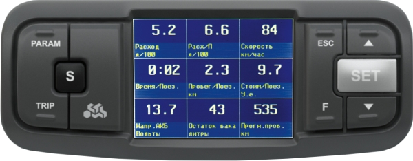
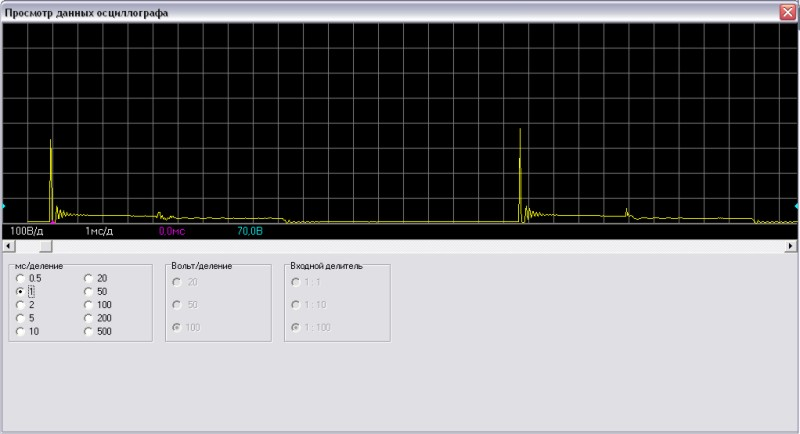

Бортовой компьютер Multitronics VC731 - очень удобная штука! В работе выглядит так:

Крепится сверху, возле зеркала заднего обзора.
Рекомендуемая розничная цена 6540 руб.
http://www.multitronics.ru/products/vc731/
|
Цветной дисплей Цветной TFT дисплей 2.4" разрешением 320х240 и рабочей температурой от -20 градусов. Цветовое оформление дисплеев может быть настроено пользователем индивидуально (по RGB каналам). Четыре предустановленные цветовые схемы с быстрым переключением. Мультидисплеи Дисплеи х 1 параметр, 6 настраиваемых дисплея х 4 параметра, 4 настраиваемых дисплея х 7 параметров, 3 настраиваемых дисплея х 9 параметров, 8 графических настраиваемых дисплеев х 2 (или 1) параметр, 8 стрелочных настраиваемых дисплея х 2 параметра, 7 дисплеев средних параметров х 7 параметров, 2 дисплея парктроника, 4 горячих меню х 10 функций. 32-разрядный процессор Мощный 32-разрядный процессор обеспечивает большую точность и скорость работы. Универсальное крепление Бортовой компьютер может быть легко установлен на лобовое стекло или парприз ("торпедо") автомобиля. Крепление позволяет отрегулировать прибор в 2-х плоскостях и обеспечит нулевой уровень вибрации. Поддержка протоколов Бортовой компьютер поддерживает самое большое количество универсальных и оригинальных протоколов диагностики автомобилей. Это позволяет установить его практически на любой автомобиль. Даже если протокол диагностики автомобиля не поддерживается, всегда можно подключиться к датчику скорости и форсунке и задействовать большинство функций. Расширенная диагностика До 200 параметров диагностики ЭБУ для множества оригинальных протоколов, включая паспорт, сервисные записи ЭБУ на уровне диагностического сканера. Чтение данных стоп-кадра (до 40 параметров) при возникновении ошибки в работе системы, состояния контрольных систем автомобиля из оригинального протокола без переключения в протокол OBD-2. Диагностика не только ошибок, но и параметров АБС, электропакета и других дополнительных систем. Простая настройка Большую часть настроек можно редактировать и сохранять при помощи программы с обычного персонального компьютера (при подключении стандартным кабелем mini-USB).
Перенос статистики поездок на ПК Статистика поездок может быть перенесена на персональный компьютер и импортирована в различные программы для дальнейшего анализа и ведения статистики за продолжительный период времени. Сохранение файла конфигурации на ПК Все настройки бортового компьютера могут быть сохранены в файл на ПК пользователя - это позволяет обмениваться конфигурационными файлами между пользователями идентичных автомобилей. Сделав все необходимые калибровки на одном автомобиле (калибровку расхода топлива, скорости, бака), готовый файл конфигурации можно передать другим пользователям аналогичных машин. Легкая установка Возможность подключения бортового компьютера только к колодке диагностики автомобиля (для большинства автомобилей). Подключение до 2-х парковочных радаров Бортовой компьютер позволяет произвести подключение до 2-х парковочных радаров Multitronics одновременно (спереди и сзади) (рекомендуется Multitronics PU-4TC). Допускается одновременное подключение парктроников только одной модели (например совместная работа PT-4TC и PU-4TC невозможна). Встроенный голосовой синтезатор Голосовое сопровождение режимов, всех параметров, проговаривание их числовых значений, 21 голосовое предупреждение об авариях и выходах за пределы установок. Проговаривание неисправности сразу при ее возникновении При возникновении ошибки в ЭБУ автомобиля бортовой компьютер не только предупредит о факте ее возникновения, но и проговорит код ошибки и ее расшифровку. Таким образом водитель сразу же будет знать, стоит ли устранять причину ошибки немедленно или можно продолжить движение. Полностью новый программный интерфейс. “Горячие меню” (быстрый вызов "Любимых функций") “Горячие меню” позволяют осуществить быстрый доступ к функциям, расположенным в “Дисплее установок”. Пользователь может по своему усмотрению настроить состав “Горячих меню” (до 10 функций каждое) и нажатием всего одной кнопки вызывать список функций и настроек, находящихся в различных местах “Дисплея установок”. Существует четыре независимых “Горячих меню” для дисплеев Параметры, Средние, Таксометр и Парковка. Журналы поездок и заправок Журналы средних параметров на 20 поездок и 20 заправок. “Обратный отсчет” На экране компьютера возможно одновременное отображение до двух графиков мгновенных параметров. С помощью функции “Обратный отсчет” можно перемещаться по графикам (по оси времени, 259 отсчетов) и определять численные значения параметров в “прошлом времени”, а также сравнивать их между собой. “Контроль качества топлива” С высокой точностью отслеживается изменение расхода топлива или длительности впрыска. При изменении выводится предупреждение и числовое значение ухудшения / улучшения качества топлива (в процентах к эталону). “Эконометр” Позволяет устанавливать значение пробега на остатке топлива в баке и контролировать стиль поездки (расход топлива). На основании установленного пробега, средней скорости и расчетного расхода топлива, эконометр указывает время прибытия и отклонение от установленного пробега. “Габариты” / “Газовое оборудование” Бортовой компьютер предупредит как о невключенном ближнем свете при начале поездки, так и о невыключенных габаритах после окончания поездки. Возможно использование бортового компьютера совместно с газовым оборудованием: максимально точный расчет расхода топлива с учетом отдельной поправки для газа. "Осциллограф" Бортовой компьютер может работать в качестве осциллографа (при подключении опционального кабеля "Multitronics ШП-2"): наблюдение и анализ сигналов различных датчиков и цепей а/м непосредственно на экране компьютера, сохранение и перенос осциллограм на персональный компьютер. Сравнив записанный сигнал с эталонным, вы получаете дополнительную возможность диагностики узлов автомобиля в случае сложно диагностируемых неисправностей: износ, заклинивание, замыкание, плохой контакт и т.д. По своим возможностям “Осциллограф” максимально приближен к настольным решениям: имеется возможность управлять разверткой, триггером, измерять временные интервалы, оценивать амплитуды сигналов.  первичная цепь катушки зажигания Обновление через интернет Бортовой компьютер поддерживает самостоятельное обновление программного обеспечения с помощью встроенного разъема mini-USB с возможностью запоминания и переноса настроек в новые версии.
Параметры (стандартные) 1. Давление во впускном коллекторе 2. Длительность впрыска 3. Коррекция левая, коррекция правая 4. Массовый расход воздуха (MAF) 5. Напряжение бортовой сети 6. Напряжение датчика давления кондиционера 7. Напряжение датчика кислорода (ДК1, ДК2) 8. Лямбда 9. Напряжение датчика массового расхода воздуха (VAF) 10. Обороты двигателя 11. Остаток топлива в баке 12. Положение дроссельной заслонки (дроссель, дроссель2) 13. Положение шагового двигателя 14. Электромагнитный клапан 15. Поправка угла опережения зажигания 16. Прогноз пробега на остатке топлива 17. Расход в час 18. Расход на 100 км 19. Расчетная нагрузка на двигатель 20. Скорость 21. Текущее время 22. Температура воздуха 23. Температура воздуха во впускном коллекторе 24. Температура охлаждающей жидкости двигателя 25. Угол опережения зажигания Средние за поездку 26. время в поездке 27. пробег за поездку 28. израсходованное топливо за поездку 29. средняя скорость за поездку 30. средний расход на 100 км за поездку 31. средний расход в час за поездку 32. стоимость поездки Средние с момента сброса 33. время с момента сброса 34. пробег с момента сброса 35. израсходованное топливо с момента сброса 36. средняя скорость с момента сброса 37. средний расход на 100 км с момента сброса 38. средний расход в час с момента сброса 39. стоимость с момента сброса Средние общие (с момента установки МК) 40. общее время 41. общий пробег 42. израсходованное топливо всего 43. средняя скорость общая 44. средний расход на 100 км общий 45. средний расход в час общий 46. общая стоимость поездок Средние в пробках 47. время в пробках 48. пробег в пробках 49. израсходованное топливо в пробках 50. средняя скорость в пробках 51. средний расход на 100 км в пробках 52. средний расход в час в пробках 53. стоимость в пробках Средние не в пробках 54. время не в пробках 55. пробег не в пробках 56. израсходованное топливо не в пробках 57. средняя скорость не в пробках 58. средний расход на 100 км не в пробках 59. средний расход в час не в пробках 60. стоимость не в пробках Средние от заправки до заправки 61. время до заправки 62. пробег до заправки 63. израсходованное топливо до заправки 64. средняя скорость до заправки 65. средний расход на 100 км до заправки 66. средний расход в час до заправки 67. стоимость до заправки Таксометр 68. стоимость 1 км 69. стоимость 1 мин 70. стоимость подачи 71. пробег 72. время 73. стоимость поездки Средние для бензина 74. время с момента сброса 75. пробег с момента сброса 76. израсходованный бензин с момента сброса 77. средняя скорость с момента сброса 78. средний расход бензина на 100 км с момента сброса 79. средний расход бензина в час с момента сброса 80. стоимость с момента сброса Средние для газа 81. время с момента сброса 82. пробег с момента сброса 83. израсходованный газ с момента сброса 84. средняя скорость с момента сброса 85. средний расход газа на 100 км с момента сброса 86. средний расход газа в час с момента сброса 87. стоимость с момента сброса Дисплей техобслуживания 88. Ошибки ЭБУ 89. Сброс ошибок 90. Дополнительные параметры ЭБУ 91. Состояние контрольных систем 92. Стоп-кадр 93. Паспорт ТС 94. Сервисные записи 95. Чтение и сброс кодов ошибок доп. систем ВАЗ, ГАЗ, УАЗ 96. поиск подключенных дополнительных систем 97. параметры дополнительных систем 98. Минимальное напряжение АКБ 99. Минимальная температура воздуха за сутки 100. Максимальная температура воздуха за сутки 101. Среднее напряжение АКБ 102. Замена воздушного фильтра 103. Замена масла в КПП 104. ТО форсунки 105. Замена ремня ГРМ 106. Замена охлаждающей жидкости. 107. Замена масла в дигателе 108. Замена свечей 109. Дата ТО 110. Оплата ОСАГО 111. Инфо производителя 112. Демонстрационный режим 113. Режим СТО Установки - Управление 114. Включение / отключение виртуального замка зажигания 115. Заправка до полного бака 116. Заправлено 117. Теперь в баке 118. Принудительное включение вентилятора 119. Включение эконометра 120. Качество топлива по времени впрыска 121. Качество топлива по мгновенному расходу 122. Сушка свечей 123. Инициализация ЭБУ 124. Сброс ЭБУ 125. Поправка УОЗ Установки - Поправка 126. Поправка скорости 127. Поправка расхода топлива (бензин, дизель) 128. Поправка расхода газа 129. Эталонный пробег 130. Эталонный расход топлива 131. Поправка температуры воздуха 132. Поправка напряжения АКБ 133. Начальный пробег 134. Полярность форсунки 135. Корректировка тахометра 136. Линейная калибровка бака 137. Сброс калибровки по 7 точкам 138. Тарировка бака Установки - Источники 139. Источник включения замка зажигания 140. Чувствительность виртуального замка зажигания 141. Ручной или автоматический выбор протокола 142. Тип / подтип протокола 143. Способ расчета остатка топлива в баке 144. Объем полного бака 145. Метод калибровки бака 146. Источник показаний скорости 147. Источник показаний оборотов 148. Источник показаний расхода топлива (бензин, дизель) 149. Источник показаний расхода газа 150. Способ расчета прогноза пробега на остатке топлива 151. Средний расход на 100 км, введенный вручную 152. Назначение провода «Габариты» (габариты - бензин/газ) Установки - Границы 153. Граница превышения температуры двигателя 154. Граница превышения оборотов 155. Граница превышения скорости 156. Граница скорости для расчета «Пробки» / «Не в пробках» 157. Граница низкого уровня топлива 158. Граница низкого напряжения АКБ 159. Граница высокого напряжения АКБ 160. Температура включения вентилятора охлаждения двигателя 161. Канал включения вентилятора охлаждения двигателя 162. Граница превышения впрыска / расхода топлива на ХХ 163. Граница прогрева двигателя 164. Граница скорости для замера времени разгона 165. Граница скорости для замера времени торможения Установки - Время 166. Установка даты 167. Установка времени 168. Поправка хода часов 169. Время включения будильника 170. Активация будильника Установки - Дисплеи 171. Выбор цветовой схемы 172. Сохранение цветовой схемы пользователя 173. Настройка цветовой палитры дисплея 174. Скорость вывода параметров на дисплей 175. Настройка яркости День 176. Настройка яркости Ночь 177. Управление яркостью: габариты, время, откл. 178. Время установки уровня «Яркость / День» 179. Время установки уровня «Яркость / Ночь» 180. Настройка цифровых дисплеев: 181. настройка цветов 182. настройка параметров 183. Настройка графиков: 184. настройка цветов 185. настройка параметров 186. диапазон графопостроителя 187. включение функции «Обратный отсчет» 188. Настройка стрелочных дисплеев: 189. настройка цветов 190. настройка параметров 191. настройка плавности движения стрелок 192. Отключение заставки при включении МК 193. Отключение названий дисплеев при переключении Установки - Озвучивание сообщений 194. Журнал предупреждений 195. Уровень громкости 196. Отключение голосового сопровождения 197. Настройка приветствия «Здравствуйте» 198. Период автоповтора 199. Оповещение о повышенном напряжении 200. Оповещение о пониженном напряжении 201. Оповещение о превышении скорости 202. Прореживание оповещений о превышении скорости 203. Оповещение о превышении оборотов двигателя 204. Оповещение о низком остатке топлива в баке 205. Предупреждение о возможности образования гололеда 206. Оповещение о необходимости выполнения ТО 207. Оповещение о разгоне до установленной скорости 208. Оповещение о торможении с установленной скорости 209. Оповещение в режиме “Эконометр” 210. Период озвучивания в режиме “Эконометр” 211. Оповещение о невыключенных габаритах 212. Оповещение о невключенном ближнем свете 213. Оповещение при заправке бака до полного 214. Оповещение в режиме “Контроль качества топлива” 215. Оповещение при возникновении ошибки ECU 216. Оповещение о перегреве двигателя 217. Оповещение о прогреве двигателя 218. Отключение звука нажатия на кнопки 219. Отключение звукового приветствия при включении зажигания Установки - Средние 220. Сброс данных за поездку 221. Сброс данных в «Дисплее Средние / Сброс1» 222. Сброс данных в «Дисплее Средние / Сброс2» (Заправка) 223. Сброс данных в «Дисплее Средние / В пробках» 224. Сброс данных в «Дисплее Средние / Не в пробках» 225. Сброс данных в «Дисплее Сброс3 Бензин» и «Сброс4 Газ» 226. Стоимость 1 часа поездки 227. Стоимость 1 мин поездки 228. Стоимость 1 литра топлива (бензин / ДТ) 229. Стоимость 1 литра газа 230. Период сброса данных в «Дисплее Средние/Сброс1» 231. Период сброса данных в «Дисплее Средние/Сброс2»(Заправка) 232. Период сброса данных в«Дисплее Сброс3 Бензин»,«Сброс4 Газ» 233. Время непрерывания поедки 234. Вывод параметров «За поездку» при остановке двигателя 235. Автоматическая запись журнала поездок 236. Журнал поездок 237. Журнал заправок Установки - Таксометр 238. Включение / выключение таксометра 239. Переключение тарифов день / ночь 240. Переключение номера тарифа 241. Общая стоимость всех поездок 242. Тип начала расчета: подача или минималка 243. Стоимость подачи 244. Стоимость минималки 245. Стоимость 1 мин в тарифе “День” 246. Стоимость 1 км в тарифе “День” 247. Стоимость 1 мин в тарифе “Ночь” 248. Стоимость 1 км в тарифе “Ночь” 249. Доплата за скорость 1 мин (режим “Шеф, гони”) 250. Доплата за скорость 1 км (режим “Шеф, гони”) 251. Порог скорости для включения режима “Шеф, гони” Установки - Парковка 252. Кратковременное отключение парктроника 253. Тип парктроника 254. Включение / отключение парктроника 255. Настройка чувствительности 256. Настройка быстродействия 257. Критическое расстояние предупреждения 258. Тип озвучивания (голос / зуммер / без звука) 259. Порог скорости для функции “Антиподкат” 260. Порог расстояния для функции “Антиподкат” 261. Расстояние для предварительного предупреждения 262. Расстояние для работы функции “Фаркоп” 263. Удержание парктроника во включенном состоянии 264. Включение или отключение самодиагностики Установки - Парковка вперед 265. Включение / отключение парктроника 266. Режим работы парктроника 267. Настройка чувствительности 268. Настройка быстродействия 269. Критическое расстояние предупреждения 270. Порог скорости для включения парктроника 271. Порог расстояния для включения парктроника 272. Программирование парктроника Установки - Очистка горячих списков 273. Очистка “Горячее меню Параметры” 274. Очистка “Горячее меню Средние” 275. Очистка “Горячее меню Таксометр” 276. Очистка “Горячее меню Парковка” Установки - Осциллограф 277. Сохранение осциллограммы 278. Режим работы осциллографа 279. Режим запуска осциллографа 280. Цена деления по оси времени 281. Диапазон входных напряжений (делитель) 282. Цена деления по оси напряжения 283. Уровень запуска 284. Запуск восходящим или нисходящим фронтом 285. Выход из режима осциллографа Дополнительные возможности 286. Энергонезависимая память 287. Автоматическая регулировка яркости дисплея день / ночь 288. Сброс адаптаций ЭБУ - для протоколов Subaru, Рено, М74, М74CAN 289. Формирование списков «Горячих меню» 290. Возможность самостоятельного обновления ПО 291. Сохранение настроек при обновлении ПО 292. Встроенный разъем mini-USB 293. Настройка МК с помощью программы на компьютере 294. Перенос журналов поездок на персональный компьютер 295. Перенос осциллограмм на персональный компьютер |